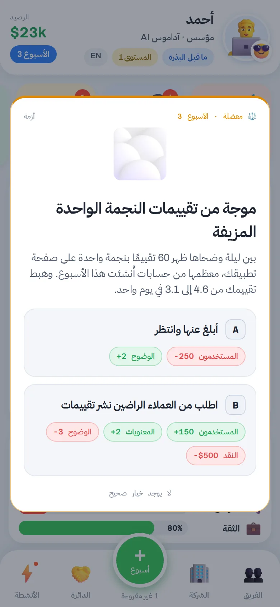
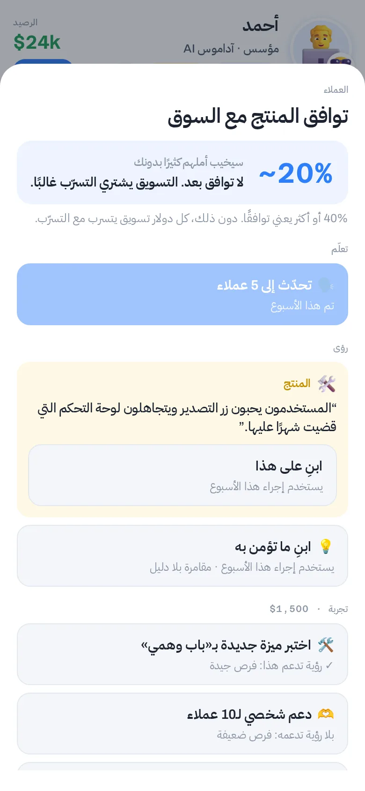
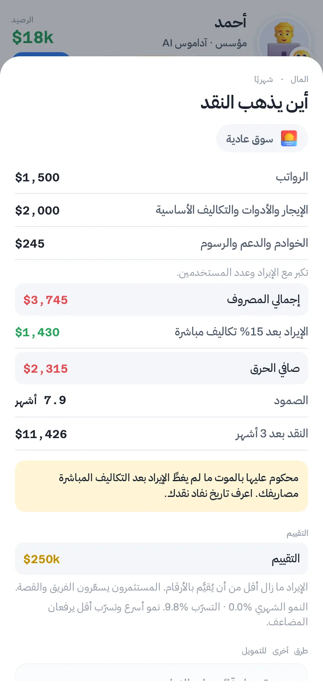
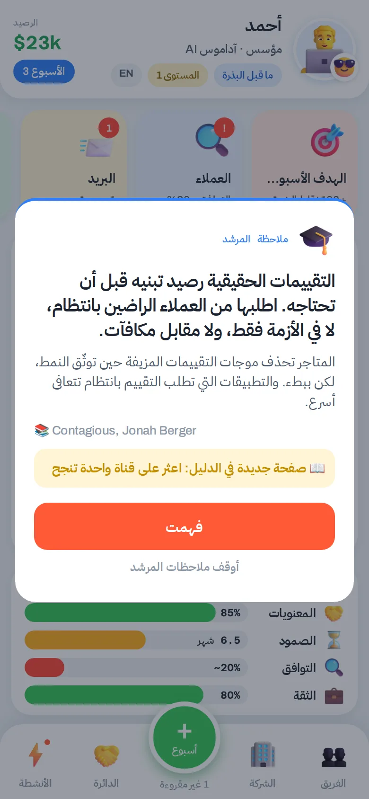
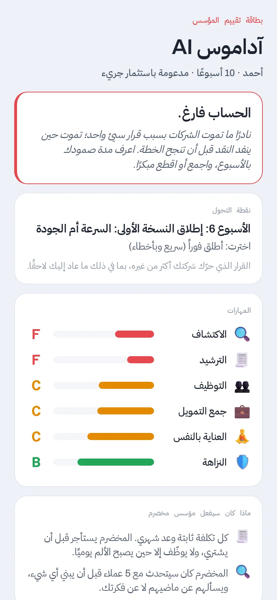
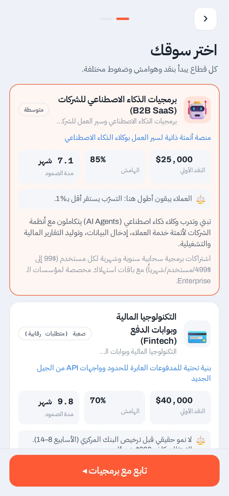

ابنِ شركة. وحافظ على صفاء ذهنك.
تضعك «ضباب المؤسس» في كرسي المؤسس لعام كامل: مدة صمود حقيقية، وعملاء حقيقيون، وأوراق شروط حقيقية، وضباب يزحف حين تتوقف عن الاعتناء بنفسك.
مجانية · بلا حساب · بالعربية والإنجليزية · تعمل على أي هاتف


لعبة يفوز فيها ما ينجح في الواقع.
معظم ألعاب الشركات الناشئة تكافئ الإنفاق. هذه مبنية لتتصرف آلياتها كشركة حقيقية: ما ينجح مع المؤسسين في الواقع هو ما يفوز هنا.

أرقام لا تكذب
التكاليف تكبر كلما كبرت، ومدة الصمود لا تصبح لانهائية، وتقييمك يتبع الإيراد والنمو والسوق. أن تكون قادرًا على العيش من إيرادك إنجاز تكسبه.

تعلّم أولًا، ثم توسّع
توافقك مع السوق مخفي حتى تتحدث إلى العملاء. الإعلانات قبل التوافق تشتري التسرّب. الرؤى والتجارب والتحولات هي طريق الفوز.

أنت أيضًا مورد
الضغط يستنزف وضوحك. حين ينخفض، يخفي الضباب أرقامك وعواقب قراراتك. الاحتراق النفسي طريقة حقيقية للخسارة.
كل أسبوع، قرار حقيقي.






كُتبت لمؤسسين في الرياض ودبي والقاهرة وعمّان.
ليست مترجمة من وادي السيليكون. اللعبة تعرف التقويم، والجهات التنظيمية، وعشاء العائلة.
 رمضان والعيدانالاستخدام يبلغ ذروته بعد الإفطار، وقرارات الشركات تتباطأ، والفريق ينتظر مكافأة العيد.
رمضان والعيدانالاستخدام يبلغ ذروته بعد الإفطار، وقرارات الشركات تتباطأ، والفريق ينتظر مكافأة العيد. التراخيص والواسطةالبيئات التجريبية للبنوك المركزية، وتوطين البيانات، وعمّ يعرض أن يجري اتصالًا.
التراخيص والواسطةالبيئات التجريبية للبنوك المركزية، وتوطين البيانات، وعمّ يعرض أن يجري اتصالًا. المدفوعاتتجميد بوابات الدفع، والدفع عند الاستلام، وعملاء يدفعون بعد ثلاثة أشهر.
المدفوعاتتجميد بوابات الدفع، والدفع عند الاستلام، وعملاء يدفعون بعد ثلاثة أشهر. العائلةوالدان يريدانك في وظيفة حكومية، وشريكة حياة تريدك في البيت على العشاء.
العائلةوالدان يريدانك في وظيفة حكومية، وشريكة حياة تريدك في البيت على العشاء.
عام كامل من أخطاء المؤسسين في ساعة، دون أن تخسر مالًا حقيقيًا.
كل جولة تنتهي بدرس يمكنك تسميته. استخدمها في محاضرة، أو انطلاقة دفعة جديدة، أو ورشة عمل.
 ملاحظات المرشدبعد كل معضلة: الدرس، ومثال من الواقع، وكتاب للقراءة.
ملاحظات المرشدبعد كل معضلة: الدرس، ومثال من الواقع، وكتاب للقراءة. دليل المؤسس40 صفحة تجمعها، من «القدرة على العيش» إلى أوراق الشروط، مع قاموس للمصطلحات.
دليل المؤسس40 صفحة تجمعها، من «القدرة على العيش» إلى أوراق الشروط، مع قاموس للمصطلحات. التحدياتجولات قصيرة بهدف واحد: انجُ من شتاء التمويل، اعثر على التوافق خلال 20 أسبوعًا، اجمع التمويل واحتفظ بالسيطرة.
التحدياتجولات قصيرة بهدف واحد: انجُ من شتاء التمويل، اعثر على التوافق خلال 20 أسبوعًا، اجمع التمويل واحتفظ بالسيطرة.
قبل أن تبدأ
هل هي مجانية؟
نعم. العبها من متصفحك بلا حساب، وبلا إعلانات، ولا شيء للشراء.
هل أستطيع اللعب من هاتفي؟
نعم. افتحها في متصفح هاتفك وأضفها إلى الشاشة الرئيسية، فتعمل كتطبيق حتى دون إنترنت. تطبيق آيفون في مرحلة تجريبية.
هل هي بالعربية فعلًا؟
بالكامل. كل شاشة ومعضلة وملاحظة مرشد وصفحة في الدليل مكتوبة بالعربية والإنجليزية، ويمكنك التبديل في أي وقت دون أن تخسر لعبتك.
كم تستغرق اللعبة؟
الجولة الكاملة نحو عام من أسابيع اللعبة، أي من 30 إلى 60 دقيقة. التحديات أقصر. وتُحفظ لعبتك تلقائيًا.
أين تُحفظ بياناتي؟
على جهازك فقط. لا يوجد حساب، ولا يُرسل شيء إلى أي خادم.
هل تستطيع بناء شركة قبل أن ينفد النقد، أو تنفد أنت؟
معظم اللاعبين لا ينجحون من المحاولة الأولى. وهذا هو المقصود.